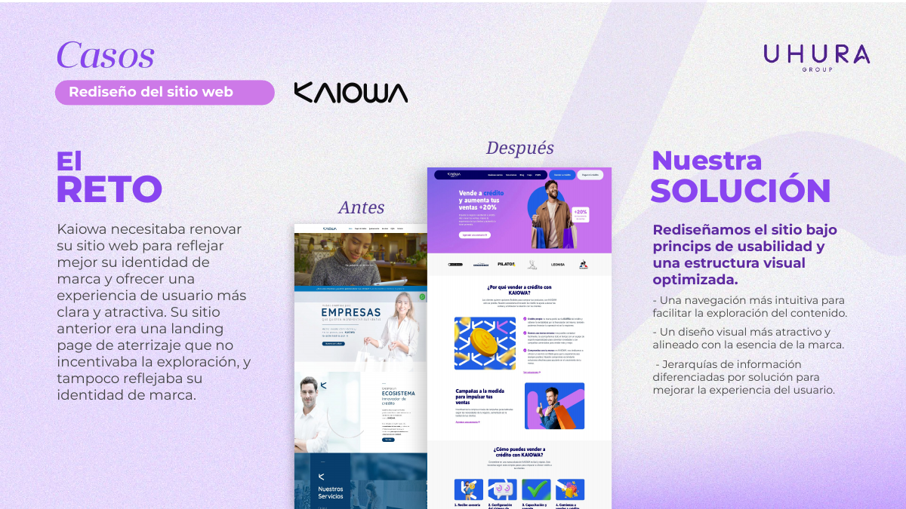
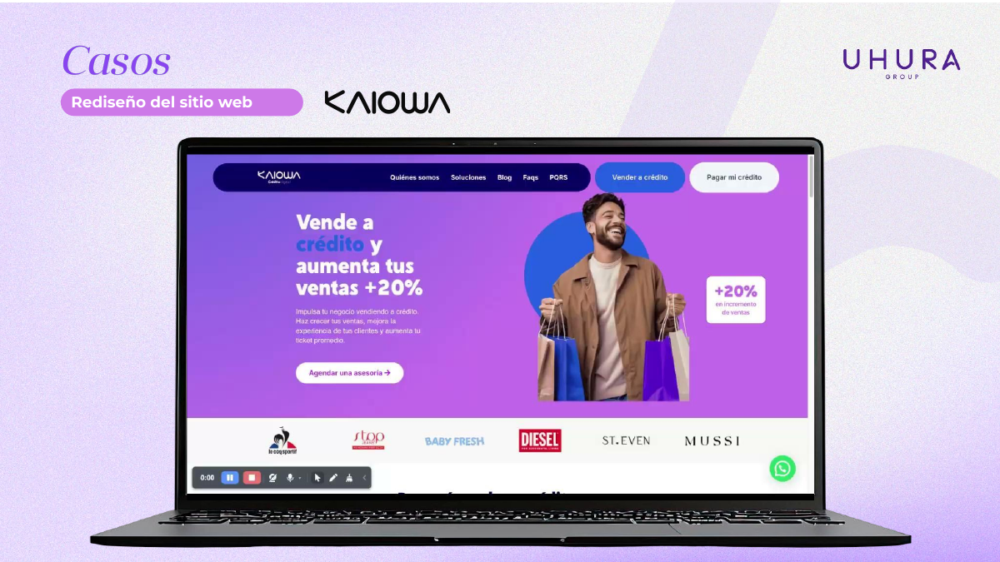

El reto
El sitio existía, pero no estaba contando toda la historia.
La experiencia anterior no incentivaba la exploración y tampoco reflejaba con suficiente claridad la identidad de la marca. Antes de pensar en diseño visual, había que entender dónde se perdía la experiencia.
El diagnóstico
Antes de rediseñar, había que entender dónde se perdía la experiencia.
El diagnóstico se concentró en usabilidad, navegación, identidad visual y jerarquía de información.
La experiencia digital no estaba ayudando a las personas a explorar el contenido.
La estructura visual no comunicaba con suficiente claridad la esencia de la marca.
La jerarquía de información necesitaba diferenciar mejor las soluciones.
Lo que hicimos
Convertimos el diagnóstico en decisiones de producto, contenido y performance.
UX Research
Analizamos comportamiento esperado, puntos de fricción y oportunidades de claridad.
UX Writing y storytelling
Replanteamos la narrativa para ordenar la información y facilitar la decisión.
Prototipo fintech
Diseñamos una experiencia confiable, clara y alineada al sector fintech.
Performance
Construimos priorizando velocidad, estabilidad, responsive y buenas prácticas.
Antes vs Después
Resultados respaldados por comportamiento real.
Antes

Después

Impacto